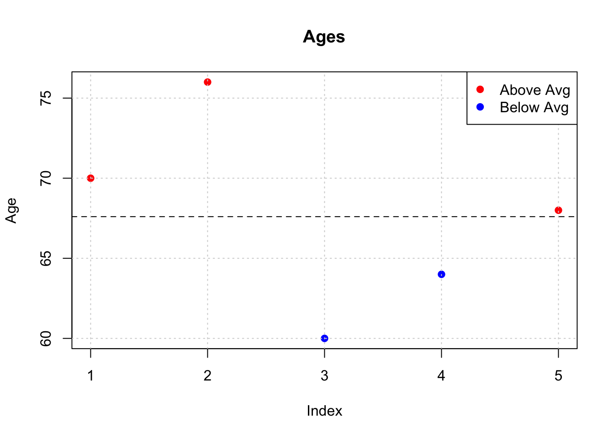

Chapter 3 The tidyverse
The dplyr package is part of the larger tidyverse package set which has expanded considerably in recent years and continues to grow in size and utility such that many people never learn the “older way” of doing things in R. But we’ve already been through that in the previous section. The tidyverse has the following packages. The descriptions have been lifted from the tidyverse home page.
ggplot2 - ggplot2 is a system for declaratively creating graphics, based on The Grammar of Graphics. You provide the data, tell ggplot2 how to map variables to aesthetics, what graphical primitives to use, and it takes care of the details.
dplyr - dplyr provides a grammar of data manipulation, providing a consistent set of verbs that solve the most common data manipulation challenges.
tidyr - tidyr provides a set of functions that help you get to tidy data. Tidy data is data with a consistent form: in brief, every variable goes in a column, and every column is a variable.
readr - readr provides a fast and friendly way to read rectangular data (like csv, tsv, and fwf). It is designed to flexibly parse many types of data found in the wild, while still cleanly failing when data unexpectedly changes.
tibble - tibble is a modern re-imagining of the data frame, keeping what time has proven to be effective, and throwing out what it has not. Tibbles are data.frames that are lazy and surly: they do less and complain more forcing you to confront problems earlier, typically leading to cleaner, more expressive code.
stringr - stringr provides a cohesive set of functions designed to make working with strings as easy as possible. It is built on top of stringi, which uses the ICU C library to provide fast, correct implementations of common string manipulations.
lubdriate - Date-time data can be frustrating to work with in R. R commands for date-times are generally unintuitive and change depending on the type of date-time object being used. Moreover, the methods we use with date-times must be robust to time zones, leap days, daylight savings times, and other time related quirks. Lubridate makes it easier to do the things R does with date-times and possible to do the things R does not.
3.1 Installing
You will probably use a number of functions from several of these packages so it’s best to go ahead and install the entire tidyverse in one go. To install it, do one of the following:
- At the R Console from within RStudio, type:
install.packages("tidyverse")- Use the Tools -> Install Packages menu item in RStudio:

After you have installed the package you may load it by doing:
suppressMessages(library(tidyverse))Note that the cheatsheet for dplyr can be found here
3.2 dplyr Basics
dplyr is a grammar of data manipulation, providing a consistent set of verbs that help you solve the most common data manipulation challenges. In fact if you were paying attention during the opening section on data frames you will have noticed that most of the activities we performed related to the following activities. In dplyr-speak there are the verbs that help us get work done.
mutate() - adds new variables that are functions of existing variables
select() - picks variables based on their names.
filter() - picks cases based on their values.
summarise() - reduces multiple values down to a single summary.
arrange() - changes the ordering of the rows.3.3 First Steps
Note that this material references “Becoming a data ninja with dplyr” as well as this dplyr tutorial
We’ll go back to the basics here by using a very small data frame which will make it clear how the various dplyr verbs actually work:
df <- data.frame(id = 1:5,
gender = c("MALE","MALE","FEMALE","MALE","FEMALE"),
age = c(70,76,60,64,68))3.3.1 filter()
The filter() function allows us to sift through the data frame to find rows that satisfy some logical condition. (With the older approach we would be using the bracket notation). The following example allows is to find only the observations relating to a declared gender of female.
filter(df,gender == "FEMALE")## id gender age
## 1 3 FEMALE 60
## 2 5 FEMALE 68# Given this data frame, the following is equivalent
filter(df, gender != "MALE")## id gender age
## 1 3 FEMALE 60
## 2 5 FEMALE 68So, now find only the ids that relate to rows 1,3, or 5. This is a highly specialized search but it is helpful to show that you can use a wide variety of logical constructs.
filter(df, id %in% c(1,3,5))## id gender age
## 1 1 MALE 70
## 2 3 FEMALE 60
## 3 5 FEMALE 683.3.2 mutate()
Mutate is used to add or remove columns in a data frame. Let’s create a new column in the data frame that contains the mean value of the age column.
mutate(df,meanage = mean(age))## id gender age meanage
## 1 1 MALE 70 67.6
## 2 2 MALE 76 67.6
## 3 3 FEMALE 60 67.6
## 4 4 MALE 64 67.6
## 5 5 FEMALE 68 67.6Next we will create a new column designed to tell us if a given observation has an age that is greater than or equal to the average age. Specifically, create a variable called old_young and assign a value of “Y” if the observed age for that row is above the mean age and a value of “N” if it is not.
mutate(df,old_young=ifelse(df$age>=mean(df$age),"Y","N"))## id gender age old_young
## 1 1 MALE 70 Y
## 2 2 MALE 76 Y
## 3 3 FEMALE 60 N
## 4 4 MALE 64 N
## 5 5 FEMALE 68 YOne way we could use something like this is in making a plot where the observations exhibiting an age value above the mean are plotted in a certain color and those below the mean are in another color.
tmp <- mutate(df, color = ifelse(age > mean(age),"red","blue"))
plot(tmp$age,col=tmp$color, type="p",
pch=19,main="Ages",ylab="Age")
grid()
abline(h=mean(tmp$age),lty=2)
legend("topright",
c("Above Avg","Below Avg"),col=c("red","blue"),pch=19)
3.3.3 arrange()
Use arrange for sorting the data frame by one or more columns. When using the basic data frame structure from R we had to use the order() function to help us generate a vector that has the row numbers of the data frame that correspond to the desired order of display (lowest to highest, etc).
Let’s sort the data frame dff by age from oldest to youngest. First we’ll use the older approach. While this will work, it is not exactly very intuitive.
df[rev(order(df$age)),]## id gender age
## 2 2 MALE 76
## 1 1 MALE 70
## 5 5 FEMALE 68
## 4 4 MALE 64
## 3 3 FEMALE 60dplyr makes this process more simple - at least in my opinion
arrange(df,desc(age))## id gender age
## 1 2 MALE 76
## 2 1 MALE 70
## 3 5 FEMALE 68
## 4 4 MALE 64
## 5 3 FEMALE 60Next, let’s sort df by gender (alphabetically) and then by age from oldest to youngest. The rows relating to a gender of female are going to be listed first because, alphabetically speaking, the letter “F” comes before the letter “M”. Then within those categories we have the ages sorted from oldest to youngest.
arrange(df, gender,desc(age))## id gender age
## 1 5 FEMALE 68
## 2 3 FEMALE 60
## 3 2 MALE 76
## 4 1 MALE 70
## 5 4 MALE 64If we used the older approach it would look like the following. Ugh !
df[order(df$gender,-df$age),]## id gender age
## 5 5 FEMALE 68
## 3 3 FEMALE 60
## 2 2 MALE 76
## 1 1 MALE 70
## 4 4 MALE 643.3.4 select()
The select() functions allows us to select one or more columns from a data frame.
# Reorder the columns
select(df,gender,id,age) ## gender id age
## 1 MALE 1 70
## 2 MALE 2 76
## 3 FEMALE 3 60
## 4 MALE 4 64
## 5 FEMALE 5 68# Select all but the age column
select(df,-age)## id gender
## 1 1 MALE
## 2 2 MALE
## 3 3 FEMALE
## 4 4 MALE
## 5 5 FEMALE# Can use the ":" operator to select a range
select(df,id:age) ## id gender age
## 1 1 MALE 70
## 2 2 MALE 76
## 3 3 FEMALE 60
## 4 4 MALE 64
## 5 5 FEMALE 68The select() function provides the ability to select by “regular expressions”" or numeric patterns:
# Select all columns that start with an "a"
select(df,starts_with("a"))## age
## 1 70
## 2 76
## 3 60
## 4 64
## 5 68names(mtcars)## [1] "mpg" "cyl" "disp" "hp" "drat" "wt" "qsec" "vs" "am" "gear"
## [11] "carb"# Get only columns that start with "c"
select(mtcars,starts_with("c"))## cyl carb
## Mazda RX4 6 4
## Mazda RX4 Wag 6 4
## Datsun 710 4 1
## Hornet 4 Drive 6 1
## Hornet Sportabout 8 2
## Valiant 6 1
## Duster 360 8 4
## Merc 240D 4 2
## Merc 230 4 2
## Merc 280 6 4
## Merc 280C 6 4
## Merc 450SE 8 3
## Merc 450SL 8 3
## Merc 450SLC 8 3
## Cadillac Fleetwood 8 4
## Lincoln Continental 8 4
## Chrysler Imperial 8 4
## Fiat 128 4 1
## Honda Civic 4 2
## Toyota Corolla 4 1
## Toyota Corona 4 1
## Dodge Challenger 8 2
## AMC Javelin 8 2
## Camaro Z28 8 4
## Pontiac Firebird 8 2
## Fiat X1-9 4 1
## Porsche 914-2 4 2
## Lotus Europa 4 2
## Ford Pantera L 8 4
## Ferrari Dino 6 6
## Maserati Bora 8 8
## Volvo 142E 4 2This example is more realistic in that data frames can have a large number of columns named according to some convention. For example, the measurements on a patient might not be labelled specifically - they might have a common prefix such as “m_” followed by some sequential number (or not).
testdf <- expand.grid(m_1=seq(60,70,10),
age=c(25,32),
m_2=seq(50,60,10),
m_3=seq(60,70,10))testdf## m_1 age m_2 m_3
## 1 60 25 50 60
## 2 70 25 50 60
## 3 60 32 50 60
## 4 70 32 50 60
## 5 60 25 60 60
## 6 70 25 60 60
## 7 60 32 60 60
## 8 70 32 60 60
## 9 60 25 50 70
## 10 70 25 50 70
## 11 60 32 50 70
## 12 70 32 50 70
## 13 60 25 60 70
## 14 70 25 60 70
## 15 60 32 60 70
## 16 70 32 60 70Find all the columns that include a “_" character
select(testdf,matches("_"))## m_1 m_2 m_3
## 1 60 50 60
## 2 70 50 60
## 3 60 50 60
## 4 70 50 60
## 5 60 60 60
## 6 70 60 60
## 7 60 60 60
## 8 70 60 60
## 9 60 50 70
## 10 70 50 70
## 11 60 50 70
## 12 70 50 70
## 13 60 60 70
## 14 70 60 70
## 15 60 60 70
## 16 70 60 70This will select columns beginning with “m_” but only those with a suffix of 1 or 2.
select(testdf,num_range("m_",1:2))## m_1 m_2
## 1 60 50
## 2 70 50
## 3 60 50
## 4 70 50
## 5 60 60
## 6 70 60
## 7 60 60
## 8 70 60
## 9 60 50
## 10 70 50
## 11 60 50
## 12 70 50
## 13 60 60
## 14 70 60
## 15 60 60
## 16 70 603.3.5 group_by()
The group_by() function let’s you organize a data frame by some factor or grouping variable. This a very powerful function that is typically used in conjunction with a function called summarize. Here is what it looks like by itself. It’s somewhat underwhelming. It does seem to create table of some kind but it doesn’t do much else.
df## id gender age
## 1 1 MALE 70
## 2 2 MALE 76
## 3 3 FEMALE 60
## 4 4 MALE 64
## 5 5 FEMALE 68# Hmm. the following doesn't do anything - or so it seems
group_by(df)## # A tibble: 5 x 3
## id gender age
## <int> <fct> <dbl>
## 1 1 MALE 70
## 2 2 MALE 76
## 3 3 FEMALE 60
## 4 4 MALE 64
## 5 5 FEMALE 68So as mentioned, the group_by function is usually paired with the summarize function. Ah. so what this does is to first group the data frame by the gender column and then it counts the number of occurrences therein. So this is a form of aggregation.
summarize(group_by(df,gender),total=n())## # A tibble: 2 x 2
## gender total
## <fct> <int>
## 1 FEMALE 2
## 2 MALE 3Let’s group the data frame by gender and then compute the average age for each group.
summarize(group_by(df,gender),av_age=mean(age))## # A tibble: 2 x 2
## gender av_age
## <fct> <dbl>
## 1 FEMALE 64
## 2 MALE 70Let’s group by gender and then compute the total number of observations in each gender group and then compute the mean age.
summarize(group_by(df,gender),av_age=mean(age),total=n())## # A tibble: 2 x 3
## gender av_age total
## <fct> <dbl> <int>
## 1 FEMALE 64 2
## 2 MALE 70 3